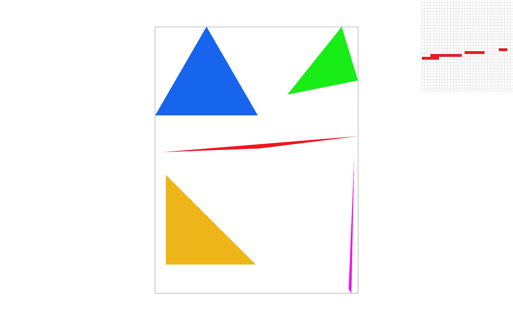
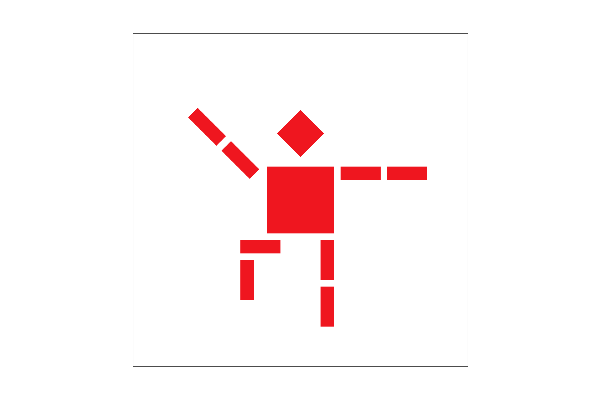

Overview
Give a high-level overview of what you implemented in this project. Think about what you've built as a whole. Share your thoughts on what interesting things you've learned from completing the project.
Section I: Rasterization
Part 1: Rasterizing single-color triangles
We rasterized triangles by first taking the bounds established by the vertices of a given triangle, sampling pixel by pixel within these bounds and outputting a color for any sampled points found within the edges of the triangle defined. We since we are only taking a single sample point per pixel, we know that our algorithm is only as inefficient as checking each pixel of the entirety of our bounding box.
Part 2: Antialiasing triangles
Supersampling is implemented here by separating our pixels into some square number of sampling points(i.e. number of samples per side squared). With multiple samples per pixel, we take the average color value of that entire pixel and output that as the color of the pixel in our rasterized image. Supersampling helps us render rasterized images in a more accurate manner, as we have a better sense of the color gradient and discontinuities in our image since we sample at a denser rate.

Part 3: Transforms
I had decided to render my own cubeman balancing himself on one foot, striking a pose as a a martial artist would in the crane stance.
Section II: Sampling
Part 4: Barycentric coordinates
Barycentric coordinates are something of a weighted coordinate system where values of the coordinates in question are determined by the "weight" each vertice surrounding it has on it. To show this, we can refer to a color triangle and see the effects of barycentric coordinates on color gradients. We do this by taking and normalizing the distance the point we are looking at to each edge of our rasterized triangle and assigning it a color value to match the weight each vertex has on it.
Part 5: "Pixel sampling" for texture mapping
Part 6: "Level sampling" with mipmaps for texture mapping
Section III: Art Competition
If you are not participating in the optional art competition, don't worry about this section!